A témakör célja, hogy a tanulók megtanulják a Python programozás megkezdéséhez szükséges alapokat, telepítéssel, fejlesztői környezet megismerésével és egyszerű programok készítésével.
- Mi a számítógépes program?
- Mi a különbség a fordított és interpretált programozási nyelvek között?
- Alapvető információk a Python programozási nyelvről.
- A Python az utasítások lezárásához a sortörést használja! Tehát minden utasítást új sorban kell kezdeni!
- A Python a hatókörök (scope) jelölésére a behúzást (indentation) használja! Azonos szintre behúzott sorok ugyanahhoz a hatókörhöz tartoznak!
- Mit kell a gépünkre telepíteni, hogy Python-ban tudjunk programozni?
- Maga a Python, amit a python.org honlapról tudunk letölteni.
- Egy IDE, amely lehet a már megismert Visual Studio Code, csak telepíteni kell még néhány kiterjesztést (extension).
- Vagy használhatjuk a pycharm download community oldalról letöltött és beállított PyCharm fejlesztői környezetet is. Ehhez le kell egy kicsit görgetni a weboldalon!
- Írjuk meg a "Helló Világ!" programunkat!
- Egyszerű, tipikus programhibák megkeresése és javítása.
- zárójelek elmaradása
- behúzás elmaradása
- betűk felcserélése
Nézzünk néhány körülírást:
A számítógépes program azon utasításoknak a sorozata, amelyeket a számítógépnek egymás után végre kell hajtania valamely feladat elvégzése céljából, jellemző módon azt, hogy az adatokkal milyen műveleteket végezzen.
A számítógépes program egy programnyelven írt algoritmus, azaz bizonyos egzakt feltételeket, követelményeket (előre definiáltság, egyértelmű végrehajthatóság stb.) kielégítő utasítássorozat.
A számítógépes program egy részletes terv vagy eljárás egy számítógéppel kapcsolatos probléma megoldására. Pontosabban, egy ilyen megoldás eléréséhez szükséges számítási utasítások egyértelmű, rendezett sorozata.
A számítógép memóriájában tárolt programok lehetővé teszik a számítógép számára, hogy különböző feladatokat sorban vagy akár szakaszosan hajtson végre. A belsőleg tárolt program ötletét az 1940-es évek végén vetette fel a magyar származású matematikus Neumann János.
A számítógépes program úgy készül, hogy először megfogalmazunk egy feladatot, majd azt egy megfelelő számítógépes nyelven, feltehetően az alkalmazásnak megfelelő nyelven megoldjuk. Az így előállított specifikációt általában több lépésben lefordítják egy kódolt programmá (gépi kód - machine code), amelyet közvetlenül az a számítógép hajthat végre, amelyen a feladatot futtatni kell. Az eredeti feladat megoldására alkalmas nyelvek az úgynevezett problémaorientált nyelvek. A problémaorientált nyelvek széles skáláját fejlesztették ki, az ismertebbek a C, C++ és C#, Python és Java, JavaScript és php.
Nézzük a következő ábrát:
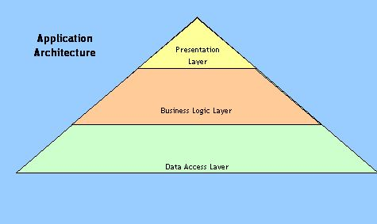
Látható, hogy egy számítógépes program (alkalmazás) a következő három rétegből épül fel:
clear_all Adatszerkezeti (Adathozzáférési) Réteg (Data Access Layer) - itt hozzuk létre és tároljuk azokat az adatszerkezeteket, amelyekkel dolgozni fogunk
clear_all Üzlet Logika Réteg (Business Logic Layer) - itt valósítjuk meg az adatok feldolgozását
clear_all Felhasználói Felület Réteg (Presentation Layer) - itt kérjük be az információkat a felhasználótól, és itt írjuk ki a lehetséges kimeneteket (User Interface)
Miután elkészült a feladatmegoldás algoritmusa, szükséges annak valamely programozási nyelven történő megvalósítása. Ezen nyelveket többféleképpen is csoportosíthatjuk. Mi most csak a futtatási mód alapján nézzük meg.
interpretált (értelmezett, interpreted) nyelvek: Ebben az esetben a forráskódot soronként dolgozza fel egy értelmező (interpreter) szoftver, és azonnal futtatja is. Az első hibánál automatikusan egy hibaüzenettel leáll. Az ilyen nyelveket nevezik még scriptnyelv-eknek is: Python, JavaScript és php, valamint a forráskódokat script-eknek.
fordított (compiled) nyelvek: Ebben az esetben az egész forráskódot egyben dolgozza fel egy fordító (compiler) szoftver, és abból előállít egy bytecode-ot egy .exe kiterjesztésű állományba. Ha hibákat talál akkor azokat jelzi és nem készít bytecode-t. Ilyen nyelvek a C, C++, C# és Java.
A Python egy scriptnyelv, azaz szükséges egy interpreter, hogy scripteket tudjunk futtatni a számítógépünkön. Guido van Rossum alkotta meg 1991-ben.
Mire tudjuk használni?
clear_all Szerveroldali támogatás webes fejlesztésekhez.
clear_all Szoftverfejlesztésekhez.
clear_all Komplex matematikai számításokhoz.
clear_all Hálózati szkriptekhez.
A Python szinte az összes ismert platformon elfut (Windows, Linux, Mac, Raspberry Pi stb.). Szintaxisa hasonló az angol nyelvhez, ezért könnyen tanulható!
Néhány nagyon fontos szabály Python programok írásához:
Két dolog szükséges hozzá.
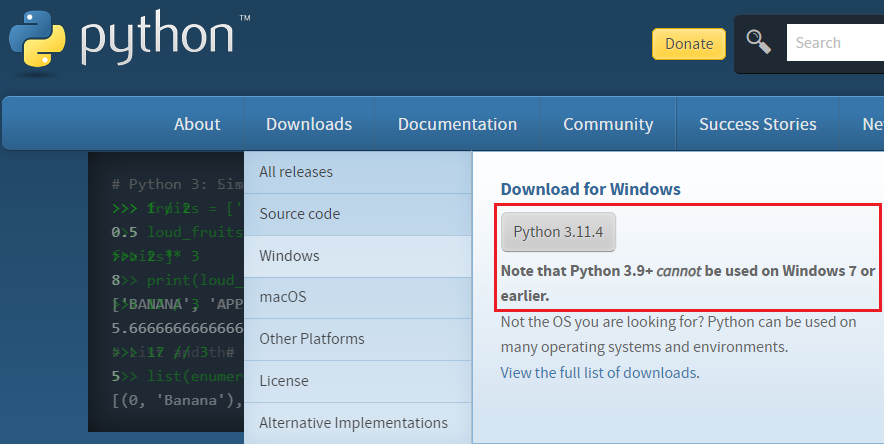
Ha már telepítettük a python-t és elindítottuk a Visual Studio Code-ot, hozzunk létre benne egy üres .py állományt és mentsük el. Ekkor alapból felajánlja a gépre telepített python-nal kapott interpretert . Fogadjuk el! Ha nem települt volna, akkor állítsuk be a következőket:

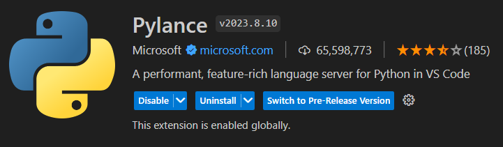


Néhány videó a beállításokhoz!
Indítsuk el a PyCharm-ot, és nyissunk egy új projekt-et elsoProjekt néven. Állítsuk be azt a mappát, ahová a projektjeinket menteni fogjuk. Vegyük ki a pipát a main.py-nál! A fenti videó szerint állítsuk be az interpreter-t.

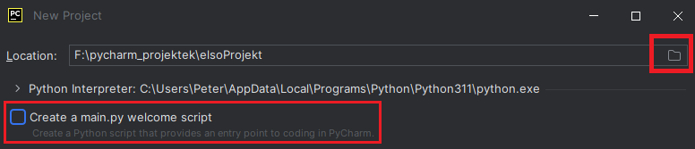
Hozzuk létre a hello_world.py állományt! Írjuk be az egyeten sort, majd jobb egérgomb lenyomása után válasszuk ki a Run 'hello_world utasítást!
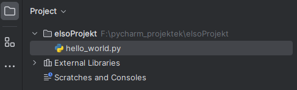

A megnyíló terminálablakban láthatjuk a kimenetet. Az első sorban az alkalmaztott interpreter és az állomány neve olvasható. Alatta a megjelenítendő szöveg található!
Ugyanerre az eredményre jutunk, ha a menüsorban megnyomjuk a kis jobbra mutató zöld nyilat.

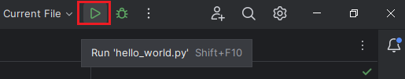
Programozóként kétfajta hibát tudunk legtöbbször elkövetni. Szintaktikai és szementikai hibát. Nézzük meg ezeket egy kicsit közelebbről!
szintaktikai hiba: Ebben az esetben a nyelv szabályai ellen követek el hibát. Ezt könnyebb felismerni, és a legtöbb fejlesztői környezet azonnal a tudomásunkra hozza valamilyen formában. A PyCharm esetén a képernyő jobboldalán megjelenő piros felkiáltó jellel és piros hullámos aláhuzással. A felkiáltó jelre kattinva nyílik meg alul a konzol a lehetséges hibákkal.
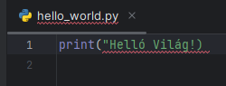
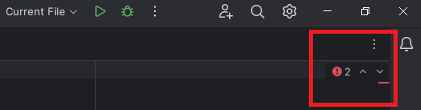
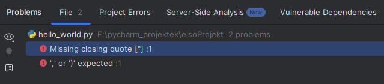
Hasonló hibák lehetnek:
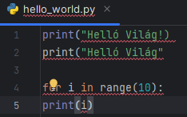
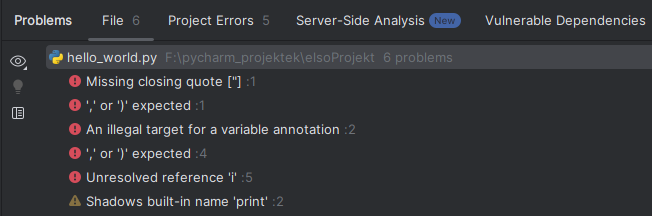
szemantikai hiba: Ezt a hibatípust nehezebb észrevenni, mert nem jelöli a fejlesztői környezet. Ekkor a kód jónak tűnik, de mégsem az elvárt eredményt adja, vagy nem is ad eredményt.
Ekkor lép be az életünkbe a hibakeresés (debuggolás). Ehhez mellékelek egy videót egyszerű példákkal.